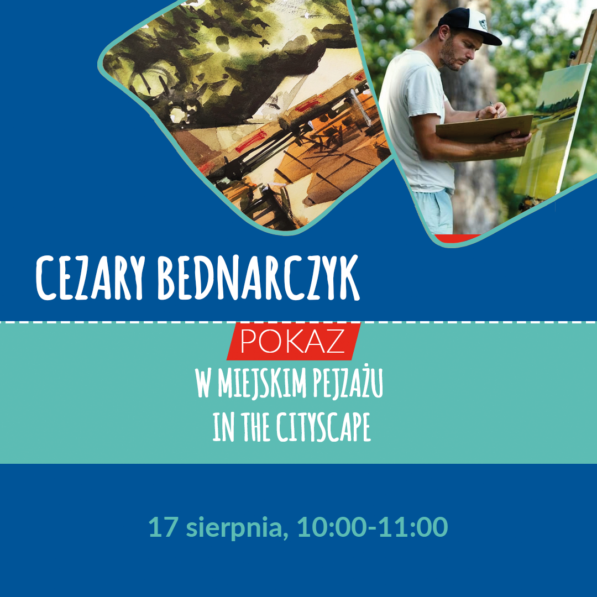
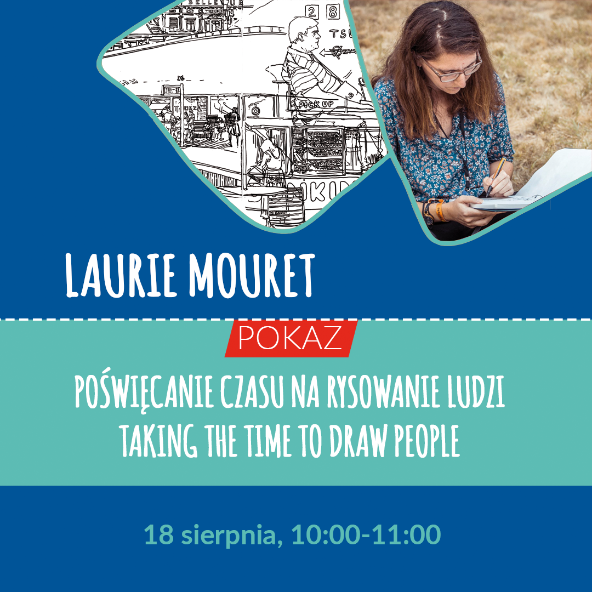
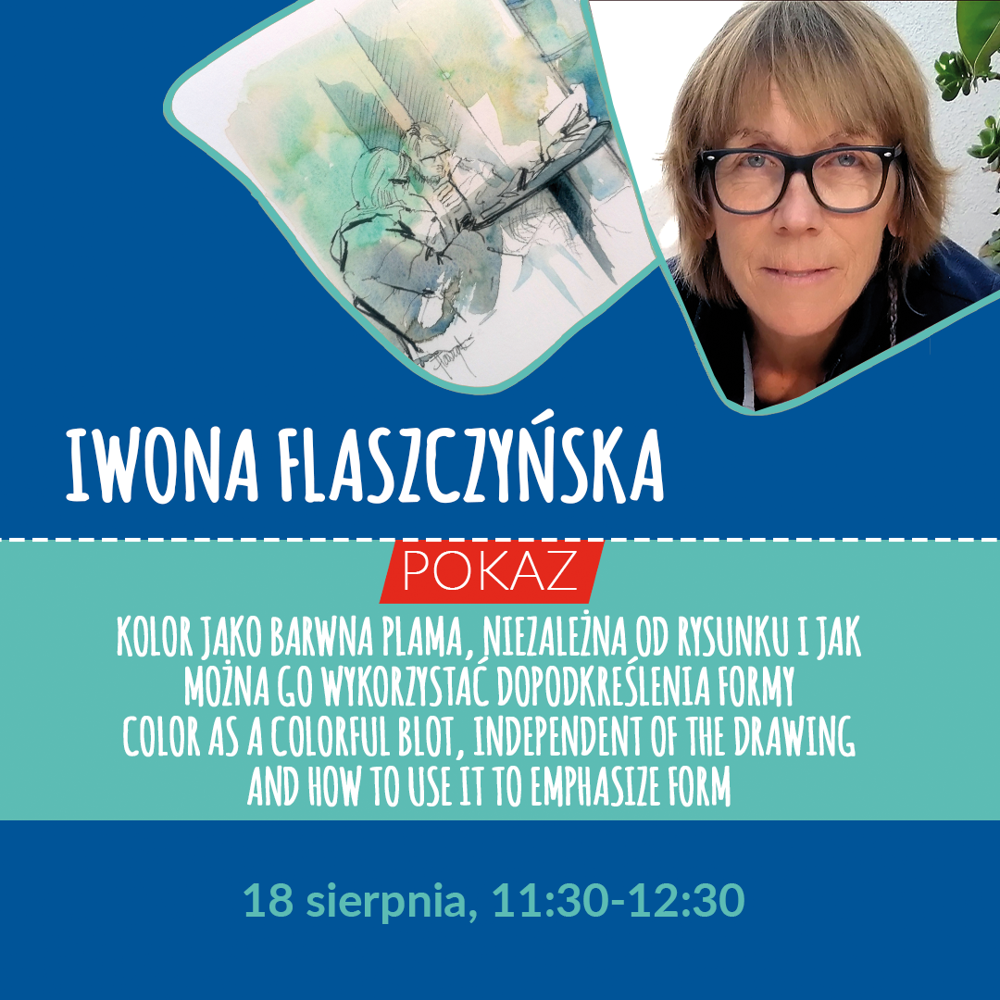
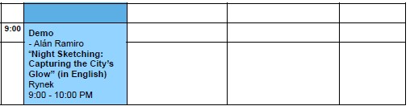
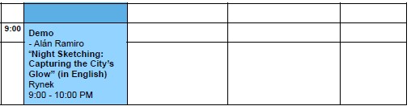

Urban Sketchers from Poland and Europe, let's unite once again! Join us for the third Urban Sketching Festival in Świdnica, Poland, from August 15 to 18, 2024. This beautiful city in Lower Silesia will be filled with outdoor drawing enthusiasts. Sketching sessions amid historical landmarks, plein air workshops, exhibitions, lectures, art supplies fair – these are just a few attractions. It's also a chance to meet interesting people and become part of the international community that admires the world with a sketchbook in hand.
For more information in the upcoming months, we will share updates on our festival's Facebook page: Urban Sketching Festival Świdnica
The price of the Festival entry (a goodie bag and ID for in-person pick-up during the Festival) is 50PLN and for a workshop is 100PLN.
This year, each workshop teacher will also conduct a presentation or demo. Admission to presentations and demos is free for all Festival participants.
There is a participant limit for each session. The cost of individual workshops is 100 PLN. You can sign up for any number of workshops. ATTENTION - some sessions overlap, please check the schedule before signing up!
About the workshop
“Life through the Shadows: A Three-Step Framework to See, Shape, and Sharpen”
In this immersive workshop, "Life through the Shadows," Alán Ramiro will guide participants through a transformative approach to urban sketching using his unique three-step framework: See, Shape, and Sharpen. In this workshop details become a treat, and not a chore. By observing shadows first, we guide our vision to make forms by applying an ink wash or watercolor directly to the scene. Out of this process we then define contours and edges in ink and pen with selective admiration. What once was hard to imagine to sketch is now a delight through light and shadow. This method helps sketchers transcend the overwhelm of details and the pitfalls of perfectionism, turning the act of sketching into a joyous exploration of light and shadow.
Materials
- A4 or larger watercolor sketchbook/ or block. And scrap paper for a quick practice sketch./li>
- A color pencil (preferably blue, black or purple)
- Paint brushes: Round brush: Size 12-16. And size 4.
- Suggested: Waterbrushes filled with diluted ink: Dark and medium.
- Watercolors: A standard watercolor kit. Suggested to have ultramarine blue, yellow ochre, and burnt sienna.
- Pens: A few pens of different sizes that are permanent black ink. Or a fountain pen with waterproof ink.
- A stool. Water Cup. Water. Paper towel.
About the teacher
Alán Ramiro - Driven by a passion for creating, connecting, and serving, Alán Ramiro brings his unique blend of nomadic travels to architecture design experience to the world of urban sketching. His decade of working in architecture in the United States multiplied by numerous travels around the world has honed his ability to translate complex structures into lively sketches.
During a recent sketching journey through Rome, Italy, Alán was met with the challenge of intricate facade details that birthed a new technique that revolutionized his approach – sketching shadows first. This simple yet powerful technique transformed the way he approaches architectural details, instilling freedom and energy into his sketches.
Alán knew he was an artist at the age of nine but life circumstances pushed it away until one day in 2013 his passion for art was reignited. During his architecture studies in Spain for one year he ran out of money and so Alán embraced the urgency to master sketching, giving rise to 'seethelines.' Through rigorous visualization exercises, Alán discovered the transformative power of urban sketching for self-actualization. Now based in Lisbon after over 30 countries sketched, Alán's journey has evolved, embracing the dual roles of artist and educator on a path of creative exploration. His workshops guide sketchers to infuse personal experiences into their art, transcending mere replication. Urban sketching, for Alán, isn’t not just something we do for fun, it's a lifeline to honor the present and witness our growth in physical form throughout life.
Instagram: @seethelines
Register since June 20th
About the workshop
“The art of light and shadow: soft pastel workshop”
During the workshops, we will learn how to capture the play of light and shadow with pastels, discover scenes in a park environment, and experiment with various pastel drawing techniques.
Materials
- gray sandpaper (grit 1500) (approx. 20 by 30 cm) or gray or black paper
- clip for the paper
- clips
- dry pastels in various colors:
7 pastels: white, ultramarine 140, green beryl 214, dark green 229, scarlet 070, Herculaneum red 068, light cadmium yellow 512. Additionally, you can add ochre 035, French gray 802, night blue 149
- eraser
- sharpener (if the pastels are in pencil form)
About the teacher
Anna Iudina - An artist born in Siberia. The long graphic winter and short, colorful summer inspired her to create works full of color. Her creativity is diverse, working in various graphic and painting techniques. Sketches play an important role in her work, and her favorite subject is the human figure.
Instagram: aiu_art
Sold out
About the workshop
“People all around me”
Sketching workshop of people in urban surroundings.
I'll try to convince you that drawing people is a great thing, a reflex and line training, learning to let go of details, shape synthesis. Figures can be useful in your sketches, add a story or simply liven up urban scenes, appear in the foreground or in the background. In the limited time of the workshop, it's hard to master rapid and perfect sketching of people, but I'll show a few useful ways to tackle this topic.
I hope we'll also just have a good time!
Materials
- soft pencils (6B, 7B, 8B)
- something for sharpening
- a sketchbook that you enjoy drawing in - preferably without texture and not too expensive (I plan for us to do a lot of sketches)
- if you like drawing with markers, bring markers
- bring the tool that you work well with
About the teacher
Anna Ziętkiewicz - A fan of urban sketching and has been doing it for a long time, even before she knew about the group's existence. For years, she has been an active member of Urban Sketchers Poland. She particularly enjoys sketching people.
Instagram: kaszel_kaszalota
Sold out
About the workshop
“Colorful Świdnica: A Gouache Painting Journey”
Workshop in English.
Learn to create vibrant urban sketches using gouache and mixed media techniques.
Gouache offers a unique matte and opaque finish that’s perfect for urban scenes, enhancing the
depth and vibrancy of your artwork.
In this workshop, we’ll explore unconventional methods to achieve a loose, expressive, and bold
artistic style. By blending gouache with dry mediums like colored pencils, crayons, and graphite, we’ll break traditional artistic norms.
We’ll begin by experimenting with textures and mixing materials, encouraging freeform strokes and irregular patterns. These initial exercises will help you embrace new artistic languages to capture the lively essence of the cityscape.
Next, we’ll focus on creating mini-sketches of urban details. Here, we’ll use gouache for the
background and integrate colorful lines using dry techniques. We’ll work with spontaneous color
choices while emphasizing essential details to convey a sense of synthesis.
In the final part, we’ll explore into composition techniques, deforming perspectives and merging
various textures to craft a dynamic and fluid representation of the cityscape.
Materials
- 1 mixed media sketchbook, hot-pressed paper
A4 drawing low-quality paper just for testing
- Graphite pencils: 2B, 6B
- Black pencil Pitt-oil
- Black pen
- Eraser
- Sharpener
- Basic Gouache colors in tubes (regular gouache, not acrylic): Cyan, Magenta, Yellow, Black, and
White. Optional extra colors such as turquoise, ocher, raw sienna, orange, opera pink, etc
- empty palette for mixing
- Brushes: 1 inch flat brush, 2 round brushes, one rigger brush, and a couple of old brushes if available
- Water brushes for fast sketching
- Water container
- Paper towels
- Folding stool
- Oily colored pencils like Polychromos, Luminance, or Prismacolor: ochre, orange, turquoise, dark
green, black...
- Some Neocolor II crayons or oil pastels: ochre, blue, orange, dark rose, white…
About the teacher
Maru Godas - She was born in Barcelona in 1966. Trained as a graphic designer, she runs her own graphic studio in her city and is an active member of the Urban Sketchers group. Her works have been featured in publications such as National Geographic and Planeta.
In her free time, Maru creates with watercolor and oils, currently working as an illustrator. She continually explores new techniques: inks, watercolors, pencils...
Instagram: marugodas
Sold out
About the workshop
“In the search of contrast / Controlled expressiveness”
During the workshop, participants will learn about my approach to working outdoors, the materials I use, and how I strive to capture the atmosphere of a particular location. They will also learn about the compromises necessary to avoid 'fatigue' in their work.
Participants will discover how to seek out contrast and how to manipulate it to enhance the expressiveness of their watercolors.
Materials
- all necessary materials that will enable participants to create an outdoor artwork using the watercolor technique (e.g., a hardboard, painter's tape, watercolor paper - preferably cotton, brushes dedicated to watercolor - soft bristles)
About the teacher
Cezary Bednarczyk - A native of Zielona Góra. In July 2015, he defended his master's degree in painting at the Faculty of Arts of the University of Zielona Góra (in the studio of Prof. Stanisław R. Kortyka). He is mainly engaged in oil and watercolor painting, with his works focusing particularly on portraiture and landscape. He has participated in numerous national and international exhibitions, both solo and group. His second great passion is music (he is the drummer of a ska/swing/rock'n'roll band called Las Melinas).
Instagram: bednarczykcezary
Sold out
About the workshop
“Fast sketching results with watercolour pencils”
Workshop in English.
The aim of the workshop is to show participants how to achieve fast sketching results with a limited range of water soluble colour pencils, followed by water as an additional element.
At the beginning of the workshop a number of thumbnail sketches will be done to decide on the composition and framing, as well as on the colour selection of maximum five colours for the actual sketch.
Once the preferred composition is selected we will start on a larger sheet: A3 size.
At the beginning the basic outlines will be set out using the brightest selected colour .
Afterwards we will define the basic shapes of the different coloured areas. The shapes themselves will get filled with varying patterns - based on the appearance of the actual object.
Using a water brush pen will define the different shapes and enhance selected coloured areas. At the same time the water is used to define the shadows.
Depending on the result after about 45 minutes on the larger sheet, we will add a few marks in stronger colours to highlight specific characteristics of the subject - this could be either the outline of a person or a significant architectural feature.
Materials
- 1 water brush pen (e.g. Pentel Aqua Brush)
- around 10 water soluble pencils (varying colours), (e.g. Faber Castell "Albrecht Dürer" range)
- around 4 sheets watercolour paper, size A3
About the teacher
Michael Persch - German architect, artist, and urban sketcher residing in Plauen after spending many years abroad. He has been associated with the group since 2015 when he accidentally learned about the Urban Sketchers Singapore group.
Michael currently utilizes three sketching techniques: fountain pen combined with watercolor, ink painted with a bamboo stick, and watercolor pencils.
Instagram: persch.michael
Sold out
About the workshop
“Crossing the borders of drawing with color”
During the 3-hour workshop, we will do 2 quick exercises (max. 0.5 hours each) in the form of vignettes, small-sized, working with color spots in two versions:
1. Previously made quick sketch, then loosely placed color spots using a reduced palette (up to 3 colors) and seeking contrasts between light and shadow.
2. We start with a color spot and then introduce the contour, finishing the sketch by applying color to achieve the effect of light and shadow.
Definitive drawing, 2 hours:
We will draw with pencil, pitt oil, microns, feathers, according to preference, and then transitioning to color, we will try to exceed the boundaries of the drawing by applying color spots so that the line is not an obstacle or limitation. Instead of coloring the drawing, we will try to make color a full-fledged and independent element of our composition, extending beyond the drawing's frame.
Materials
- pencils: 2H, HB, B
- eraser, sharpener
- black micron pens 0.2, 0.5, 0.7 or a pen
- watercolors, a set of 12 colors is enough, but it must include burnt sienna, ultramarine, and Payne's gray
- soft watercolor brushes, preferably made of natural sable or squirrel hair, or their imitations, excellent synthetic squirrel brushes, Roman Szmal. Synthetic brushes are also fine, round, in 3 sizes: no. 2, 8, 12
- container for water
- absorbent paper for drying brushes
- clips for binding pages
- sketchbook, size according to preference, but it is important that it has textured paper, not smooth. It can be cellulose, cotton, or a mix, and 200gsm or higher, as we will be working with water
- stool or chair
About the teacher
Iwona Flaszczyńska - She graduated from the Academy of Fine Arts in Warsaw. She received a scholarship to Mexico, where she eventually lived for 4 years, working on important conservation projects.
Since 1990, she has been living in Spain, where she teaches and pursues her own creativity. She has traveled extensively, mainly in Latin American countries. She has numerous solo and group exhibitions to her name in Mexico and Spain.
Since 2010, she has been actively involved in the Urban Sketchers Barcelona movement. She loves traveling, experiencing other cultures, mountains and hiking, beaches, and above all... drawing, which continuously evokes great emotions in her!
Instagram: iwonaflaszczynska
Sold out
About the workshop
“Slow sketching: People and scenery in black and white”
Workshop in English.
The goal will be to have a clean sketch from the get go, which means that choices will need to be made to ensure that what interests us in the scenery will get drawn during the workshop.
The participants will learn to envision their sketch as a sum of its parts (thus making peace with "mistakes"), to focus on drawing sceneries one careful line at a time and to prioritize elements of the sketch.
Materials
- a single pen (brush pen or at least 0.5, nothing finer. I personally use the Brush fine liner from UniPin.)
- Forbidden material: anything to erase/correct lines :)
About the teacher
Laurie Mouret - She discovered urban sketching in 2012 and immediately fell in love with this type of sketching. A self-taught artist who loves working in black and white, paying attention to details.
She loves sketching people, scenes full of clutter, and vegetation. She lives in Romania.
Instagram: lau.rie.mrt
Sold out
Julita Oleszuk - Scanning the artworks
A presentation covering all the basic aspects of scanning artworks, preparing for printing, and selecting materials to ensure the color is faithfully reproduced.
Where and how to scan and print? What parameters to use? What to watch out for? How to control color? What could go wrong?
Answers to these questions and many other issues will be provided during the presentation.
Who is it for? For every artist! Because sooner or later, the time comes for exhibiting works, digitally capturing drawings, or selling prints.
Open admission.
About the teacher
Julita Oleszuk - A broadly creative graphic designer. She can talk for hours about artistic printing and scanning, and she gained her experience in digitizing the works of many Polish artists.
She is one of the leaders of USK Warsaw.
Instagram: ivy_foxes
Srikkanth Balasubramanian - My travel urban sketching in a storytelling format
Every sketch can tell a story, and what's more - every urban sketcher has their own story to tell.
This presentation will be the story of a microbiologist who found passion in urban sketching.
Open admission. Presentation in English.
About the teacher
Srikkanth Balasubramaniano - hails from Tiruchirappalli, in southern India. Since 2019, he has been living in Delft, the Netherlands. A microbiologist during the week, an urban sketcher on weekends. Srikkanth especially loves sketching on various objects - leaves, cups, stones, wine corks, kombucha labels, and more.
He is an active member of Urban Sketchers Nederland.
Instagram: srikkanthsketches
Detlef Surrey - Berlin – The Wall revisited
Where was the Wall?" - this question was asked by many tourists to Detlef when they met him sketching in various places in Berlin.
So, WHERE was he?
This question intrigued Detlef and motivated him to visit places with his sketchbook where the Berlin Wall once stood.
Thanks to this curiosity, a sketchbook full of reportage sketches documenting the contemporary world with history in the background was created. A fascinating aspect of being an urban sketcher!
Open admission. Presentation in English.
About the teacher
Detlef Surrey - A member of Urban Sketchers Berlin, an illustrator, and a draftsman. He arrived in Berlin in 1975 to study political science. It was then that he began creating comics and completed his artistic studies. On November 9, 1989, Detlef witnessed the fall of the Berlin Wall at Checkpoint Charlie.
Instagram: surrey_sketches
Aboli Dhayarkar - Live sketching - Kathak dance for urban sketchers
During this special performance, Aboli will present the Kathat dance. Urban sketchers will have the opportunity to sketch the dancer during movements.
Kathak is a north Indian dance form which comes from word 'Katha' which literally means story, hence its an art of story narration through dance. Kathak includes rhythmic dancing, meaningful body movements alongwith symbolic hand gestures. Important part of Kathak includes footwork (creating sounds/rhythms by tapping your feet), Spinning/twirling known as 'Chakkar'.
Open admission.
O prowadzącym
About the teacher - Professional Indian classical Dancer. She has completed her Masters Degree in Performing Arts with a Gold Medal from University of Pune, India.
Along with dance, I enjoy other art forms such as Mandala, Indian tribal art forms such as Gond, Warli, Madhubani, Phad, etc.
Instagram: aboli.rd
Alán Ramiro - Night Sketching: Capturing the City’s Glow
Day or night, the urban sketcher can benefit from sketching at any time. Contrary to common thought of confused visual conditions at night, the colors of the night are transmitted under the consistent street light glow. Alán Ramiro shares a demonstration of how to sketch at night capturing the multitude of reflections and shadows. The scene becomes a playground to play with watercolor washes while the night gives the benefit to exercise dark values especially for the depth of the dark sky.
Open admission. Demo in English.
About the teacher
Alán Ramiro - Driven by a passion for creating, connecting, and serving, Alán Ramiro brings his unique blend of nomadic travels to architecture design experience to the world of urban sketching. His decade of working in architecture in the United States multiplied by numerous travels around the world has honed his ability to translate complex structures into lively sketches.
During a recent sketching journey through Rome, Italy, Alán was met with the challenge of intricate facade details that birthed a new technique that revolutionized his approach – sketching shadows first. This simple yet powerful technique transformed the way he approaches architectural details, instilling freedom and energy into his sketches.
Alán knew he was an artist at the age of nine but life circumstances pushed it away until one day in 2013 his passion for art was reignited. During his architecture studies in Spain for one year he ran out of money and so Alán embraced the urgency to master sketching, giving rise to 'seethelines.' Through rigorous visualization exercises, Alán discovered the transformative power of urban sketching for self-actualization. Now based in Lisbon after over 30 countries sketched, Alán's journey has evolved, embracing the dual roles of artist and educator on a path of creative exploration. His workshops guide sketchers to infuse personal experiences into their art, transcending mere replication. Urban sketching, for Alán, isn’t not just something we do for fun, it's a lifeline to honor the present and witness our growth in physical form throughout life.
Instagram: seethelines
Michael Persch - Fast sketching results with watercolour pencils
The demo will show a similar sketching technique as the workshop.
However, the initial step (thumpnails and colour studies on smaller scale) will be skipped for the presentation and instead I will start on a larger sheet straight away.
Open admission. Demo in English.
About the teacher
Michael Persch - German architect, artist, and urban sketcher residing in Plauen after spending many years abroad. He has been associated with the group since 2015 when he accidentally learned about the Urban Sketchers Singapore group.
Michael currently utilizes three sketching techniques: fountain pen combined with watercolor, ink painted with a bamboo stick, and watercolor pencils.
Instagram: persch.michael
Anna Ziętkiewicz - Black on white
We usually have plenty of paints, crayons, markers; we can use many colors, mix techniques; sometimes we manage this abundance, and sometimes the excess of possibilities overwhelms us.
But what if we try just black on white? I'll give it a try! It may turn out that it doesn't limit us at all.
Open admission.
About the teacher
Anna Ziętkiewicz - A fan of urban sketching and has been doing it for a long time, even before she knew about the group's existence. For years, she has been an active member of Urban Sketchers Poland. She particularly enjoys sketching people.
Instagram: kaszel_kaszalota

Cezary Bednarczyk - In the cityscape
During the watercolor demonstration, participants will learn about my urban landscape painting techniques. While painting, it will be possible to ask questions or simply engage in discussions about watercolor painting.
Open admission.
About the teacher
Cezary Bednarczyk A native of Zielona Góra. In July 2015, he defended his master's degree in painting at the Faculty of Arts of the University of Zielona Góra (in the studio of Prof. Stanisław R. Kortyka). He is mainly engaged in oil and watercolor painting, with his works focusing particularly on portraiture and landscape. He has participated in numerous national and international exhibitions, both solo and group. His second great passion is music (he is the drummer of a ska/swing/rock'n'roll band called Las Melinas).
Instagram: bednarczykcezary
Maru Godas - Color, Shape, and Line: An Intuitive Dialogue
The demonstration will focus on the mixed media use of colored paper and negative spaces. The
emphasis will be on using a limited color palette and I will show how to combine color shapes with
lines and strokes. We will strive for maximum spontaneity and freedom.
Open admission. Demo in English.
About the teacher
Maru Godas - She was born in Barcelona in 1966. Trained as a graphic designer, she runs her own graphic studio in her city and is an active member of the Urban Sketchers group. Her works have been featured in publications such as National Geographic and Planeta. In her free time, Maru creates with watercolor and oils, currently working as an illustrator. She continually explores new techniques: inks, watercolors, pencils...
Instagram: marugodas
Anna Iudina - Pastel Impressions: Capture the Charm of the Old Market Square
This demo will present a personal approach to drawing from nature, a method of finding composition and capturing the light and atmosphere of a place.
Step by step you will see methods of creating pastel work, various techniques and tools for applying and mixing colors to achieve expressive effects.
Open admission.
About the teacher
Anna Iudina - An artist born in Siberia. The long graphic winter and short, colorful summer inspired her to create works full of color. Her creativity is diverse, working in various graphic and painting techniques. Sketches play an important role in her work, and her favorite subject is the human figure.
Instagram: aiu_art

Taking the time to draw people
I would explain how to observe people, how to draw what we really see and not what we think we see, and how to slowly build a sketch and how to prioritize which elements to draw. It would be more of a dialogue than a presentation, even though I'll be doing the drawing.
Open admission. Demo in English.
About the teacher
Laurie Mouret - She discovered urban sketching in 2012 and immediately fell in love with this type of sketching. A self-taught artist who loves working in black and white, paying attention to details.
She loves sketching people, scenes full of clutter, and vegetation. She lives in Romania.
Instagram: lau.rie.mrt

Iwona Flaszczyńska - Color as a colorful blot, independent of the drawing, and how to use it to emphasize form
Resolution of the selected and previously prepared topic, illustrated with photos of works and live demonstration, using watercolor technique, pitt oil, and water-soluble graphite.
Open admission.
About the teacher
Iwona Flaszczyńska - She graduated from the Academy of Fine Arts in Warsaw. She received a scholarship to Mexico, where she eventually lived for 4 years, working on important conservation projects. Since 1990, she has been living in Spain, where she teaches and pursues her own creativity. She has traveled extensively, mainly in Latin American countries. She has numerous solo and group exhibitions to her name in Mexico and Spain. Since 2010, she has been actively involved in the Urban Sketchers Barcelona movement. She loves traveling, experiencing other cultures, mountains and hiking, beaches, and above all... drawing, which continuously evokes great emotions in her!
Instagram: iwonaflaszczynska

 
